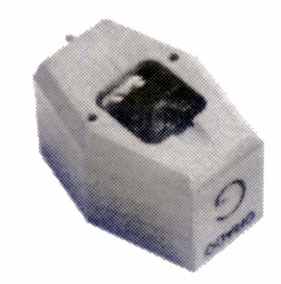
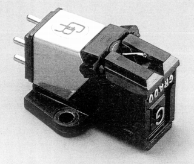
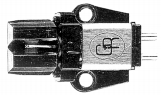
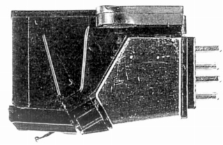
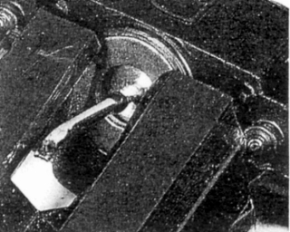

Reference Platinum

■価格 36,000円
■発電方式 MI型
■出力電圧 4.0mV
■針圧 最適1.5g
■再生周波数帯域
■チャンネルセパレーション
■チャンネルバランス
■コンプライアンス
■負荷抵抗 47kΩ
■負荷容量
■内部インピーダンス 475Ω
■針先
■自重 6.0g
■交換針 (24,000円)
■発売
1997年3月
■販売終了 年頃
■備考 価格は1997年頃のもの
なお1996年頃の資料で同名の別デザインのカートリッジが紹介されている。
Prestigeシリーズに近いデザインだが、細部は違うようだ。
 
 
■価格 25,000円
■発電方式 MI型
■出力電圧 5mV
■針圧 最適1.5g
■再生周波数帯域 10-55,000Hz
■チャンネルセパレーション 30dB
■チャンネルバランス
■コンプライアンス
■負荷抵抗
■負荷容量
■内部インピーダンス
■針先 0.3×0.6mil
■自重 5.5g
■交換針 (24,000円)
■発売
1996年頃
■販売終了 年頃
■備考
グラドのインデックス